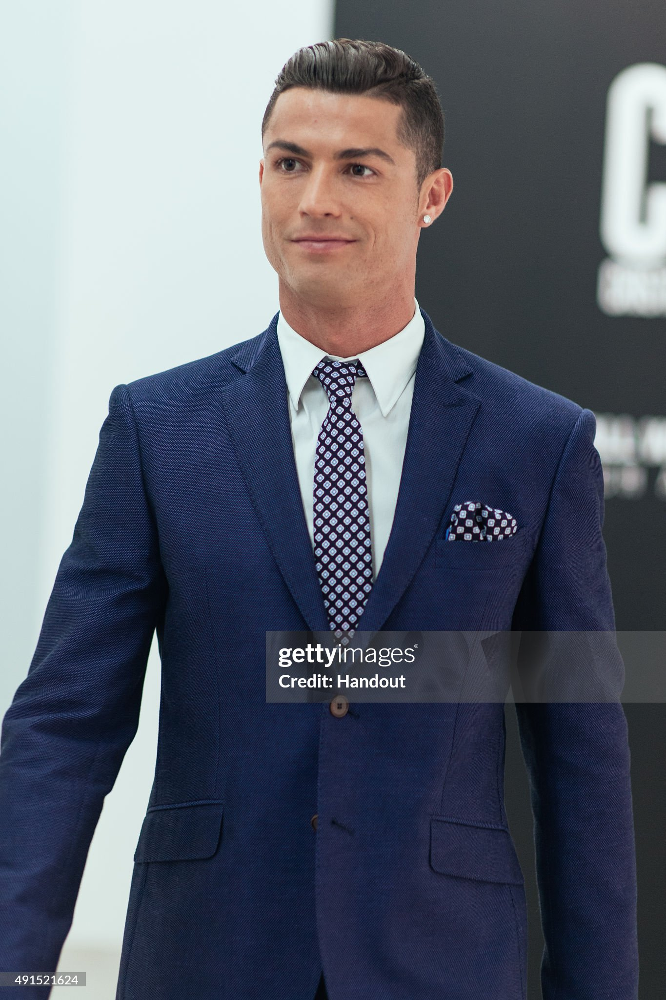

|  | English name | Cristiano Ronaldo |
| Burma Name | ခရစ်စတီယာနို ရိုနယ်ဒို | |
| Born | 5 February 1985 (age 38) Funchal, Madeira, Portugal | |
| Nationality | Portugal | |
| Position | Forward | |
| Occupation | Scoccer,Mordel | |
| Youth career | Andorinha | |
| Heinght | 1.87 m (6 ft 2 in) | |
| Senior career | Sporting CP B | |
| International career | Portugal U15 |
Cristiano Ronaldo dos Santos Aveiro was born on 5 February 1985 in the São Pedro parish of Funchal, the capital of the Portuguese island of Madeira, and grew up in the nearby parish of Santo António.[10][11] He is the fourth and youngest child of Maria Dolores dos Santos Viveiros da Aveiro, who worked as a cook in the hospitality industry and a cleaning woman,[12][13] and José Dinis Aveiro, a municipal gardener at the Junta de Freguesia of Santo António and part-time kit man for football club Andorinha.[14][15][16] His great-grandmother on his father's side, Isabel da Piedade, was from the island of São Vicente, Cape Verde.[17] He has one older brother, Hugo, and two older sisters, Elma and Liliana Cátia "Katia".[18] He was named after actor and U.S. President Ronald Reagan, whom his father was a fan of.[19] His mother revealed that she wanted to abort him due to poverty, his father's alcoholism, and having too many children already, but her doctor refused to perform the procedure,[20][21] as abortions were illegal in Portugal at that time.[22] Ronaldo grew up in an impoverished Roman Catholic home, sharing a room with all his siblings.[23]
As a child, Ronaldo played for Andorinha from 1992 to 1995,[24] where his father was the kit man,[14] and later spent two years with Nacional. In 1997, aged 12, he went on a three-day trial with Sporting CP, who signed him for a fee of £1,500.[25] He subsequently moved from Madeira to Lisbon to join Sporting CP's youth system.[25] By age 14, while struggling with his school duties and responsibilities in Escola EB2 de Telheiras, his school in the Telheiras area of Lisbon, Ronaldo believed he had the ability to play semi-professionally and agreed with his mother and his tutor at Sporting CP, Leonel Pontes,[26] to cease his education to focus entirely on football.[27][28] With a troubled life as a student[29] and living in Lisbon area away from his Madeiran family, he did not complete schooling beyond the 6th grade.[30][31] While popular with other students at school, he had been expelled after throwing a chair at his teacher, who he said had "disrespected" him.[27] One year later, he was diagnosed with tachycardia, a condition that could have forced him to give up playing football.[32] Ronaldo underwent heart surgery where a laser was used to cauterise multiple cardiac pathways into one, altering his resting heart rate.[33] He was discharged from the hospital hours after the procedure and resumed training a few days later.[34] In 2021, Cristiano Ronaldo's mother, Dolores Aveiro, stated in an interview for Sporting CP's official television channel (Sporting TV) that her son would be a bricklayer if he hadn't become a professional football player.[35]
Sporting CP
Ronaldo memorabilia at Sporting CP's museum At
age 16, Ronaldo was promoted from Sporting's youth team by first-team
manager László Bölöni, who was impressed with his dribbling.[36] He
subsequently became the first player to play for the club's under-16,
under-17 and under-18 teams, the B team and the first team, all within a
single season.[25] Sporting CP B was the 1st team in his senior career,
where he debuted in a 2–1 away loss against Sport Clube Lusitânia on 1
September 2002, in a game for the Segunda Divisão B championship played in
the Azores.[37] On 29 September 2002, Ronaldo made his debut in the
Primeira Liga, playing for Sporting CP's main team against Braga, and on 7
October, he scored two goals against Moreirense in their 3–0 win.[38] Over
the course of the 2002–03 season, his representatives suggested the player
to Liverpool manager Gérard Houllier and Barcelona president Joan
Laporta.[39] Manager Arsène Wenger, who was interested in signing Ronaldo,
met with him at Arsenal's stadium in November to discuss a possible
transfer.[40] Manchester United manager Alex Ferguson was determined to
acquire Ronaldo on a permanent move urgently, after Sporting defeated
United 3–1 at the inauguration of the Estádio José Alvalade on 6 August
2003. Initially, United had planned to sign Ronaldo and loan him back to
Sporting for a year.[41] Having been impressed by him, the United players
urged Ferguson to sign him. After the game, Ferguson agreed to pay
Sporting £12.24 million[41] for what he considered to be "one of the most
exciting young players" he had ever seen.[42] A decade after his departure
from the club, in April 2013, Sporting honoured Ronaldo by selecting him
to become their 100,000th member.[43]
| Year | League | Club | First runner up | Point |
|---|---|---|---|---|
| 2008 | Premier League | Manchester United | Lionel Messi | 446 |
| 2013 | Spain Laliga | Real Madrid | Lionel Messi | 27,99 % |
| 2014 | Spain Laliga | Real Madrid | Lionel Messi | 37.66% |
| 2016 | Spain Laliga | Real Madrid | Lionel Messi | 745 |
| 2017 | Spain Laliga | Real Madrid | Lionel Messi | 946 |